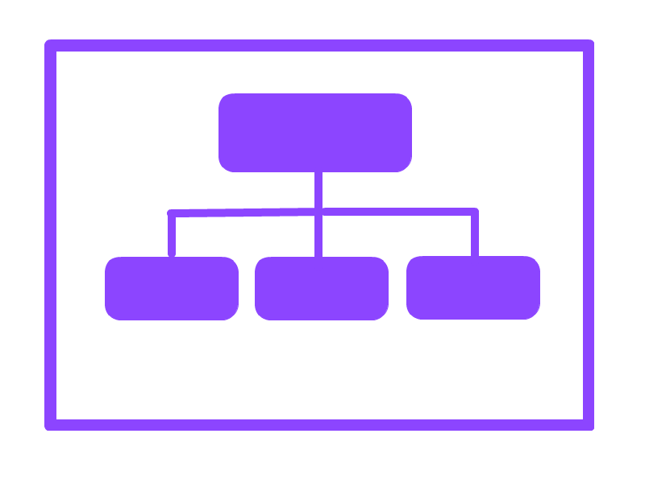
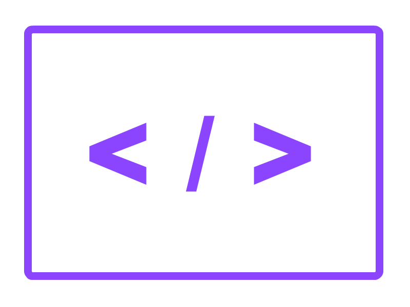

Project Management | Responsive Web Development
Coding today, for a better tomorrow...

Hi, I'm Brad. It's great to meet you.
I have spent the majority of my career focused on different aspects of Business. Everything from Workforce Management to Project Management. However, I've recently realized that I have a passion for Web Design and Development. This is why I have chosen to pursue a second Bachelor's degree in Software Development. I'm a very goal-oriented and self-motivated person and I look forward to this new chapter in my life and career. I'm currently seeking volunteers who need websites designed and implemented to build my portfolio. If you have a need for a website or know anyone who does, please ask them to contact me.
Tools & Skillsets
Business
I consider myself a change agent with extensive experience in business process optimization with the customer experience in mind.
Skills
- Process Optimization
- Change Management
- Transformation Strategy
- Business Analytics
- Customer Centricity
- Communications Management
Success Traits
- Adaptive, Focused, Intuitive
- Microsoft Outlook
- Microsoft Excel
- Microsoft PowerPoint
- Microsoft Access
- Microsoft Word
- Micorsoft OneDrive
- Microsoft OneNote
- Microsoft Skype for Business
- Citrix XenDesktop
- Jive Collaboration Software
Business Tools

Project Management
I utilize strong leadership and analytical skills to build and lead cross-functional teams on multi-faceted and complex projects.
Skills
- Leadership
- Communication
- Cost Management
- Scheduling Management
- Scope Management
- Risk Management
Methodologies
- Agile / SCRUM
- User Stories
- SCRUM Boards
- Sprint Backlogs
- Burndown Charts
- Gantt Charts
- Fishbone Diagrams
- Work Breakdown Structures
- Pareto Charts
- Control Charts
- Flow Charts
PM Tools

Coding / Development
I enjoy all things technical, including Software Development and designing and building meaningful websites for my customers.
Skills
- Web Design
- Mobile Design
- Responsive Web Development
- Cross-Browser Development
- Testing and Debugging
- Version Control
Languages
- HTML, CSS, C#
- Visual Studio Code
- Git
- Github
- Linux
- Crouton
- Bootstrap
- CodePen
- Terminal
- Chrome OS
- Windows
Dev Tools
Industry Certifications

My Recent Projects
Testamonials
"Brad is enthusiastic, highly-motivated, and would be an asset to your team. Brad's complex problem solving and planning skills allow him to easily resolve the highest of hurdles for your business."
Brianna Banner
Manager - Customer Management Planning & Strategy, Sprint
"Brad and I were in the MBA program together. We were also on the same team for most classes. We put together several presentations; Brad was a great team player, very responsible, and reliable. It was great to have Brad on our team and he was a great addition to the MBA program as a whole."
Marcos Pavlovich
Capital Markets Manager, Eastman
"I had the pleasure of working with Brad, while supporting the National Sales Support (NSS). Brad provided analytical approach to NSS that assisted improving the overall health of the organization. I would recommend Brad for any organization looking for a professional to drive towards bottom line results."
Cheryl Birdsong-Dyer
Enterprise Solution Process Architect, Centurylink
"Brad and I worked together on National Sales Support for a while. During that time, I could always count on Brad to provide analytical insight on what was occuring within NSS that would be driving results. Brad led the monthly executive reviews and did a great job of communicating results while fostering discussion around important items. Overall, Brad is a very valuable asset who would succeed in any role he is given."
Mark Masloski
MDM System Analyst, Kansas City Board of Public Utilities